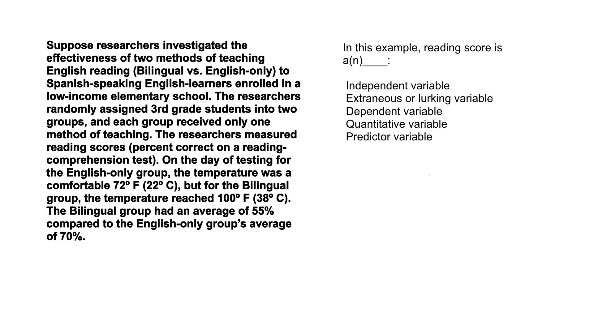

11. 28. 阅读分数
- 阅读分数
Start Quiz:

INSTRUCTOR NOTE:
假设研究者调查了使用两种英语阅读教学方法（双语教学和只用英语教学）的有效性，调查对象为一所低收入小学中的以西班牙语为母语的英语学习者。研究者将三年级学生随意分配到两个组，每组只用一种教学方法。然后研究者记录阅读得分（阅读理解测试中的正确率）。在全英文教学组进行测试的当日，气温为舒适的 72℉（22℃），但是双语教学组进行测试那天的气温达到 100℉（38℃）。最后双语组的平均成绩为 55%，而全英语组的平均成绩为 70%。
在这个例子中，阅读得分是：
- □ 自变量
- □ 额外变量或潜在变量
- □ 因变量
- □ 定量变量
- □ 预测变量